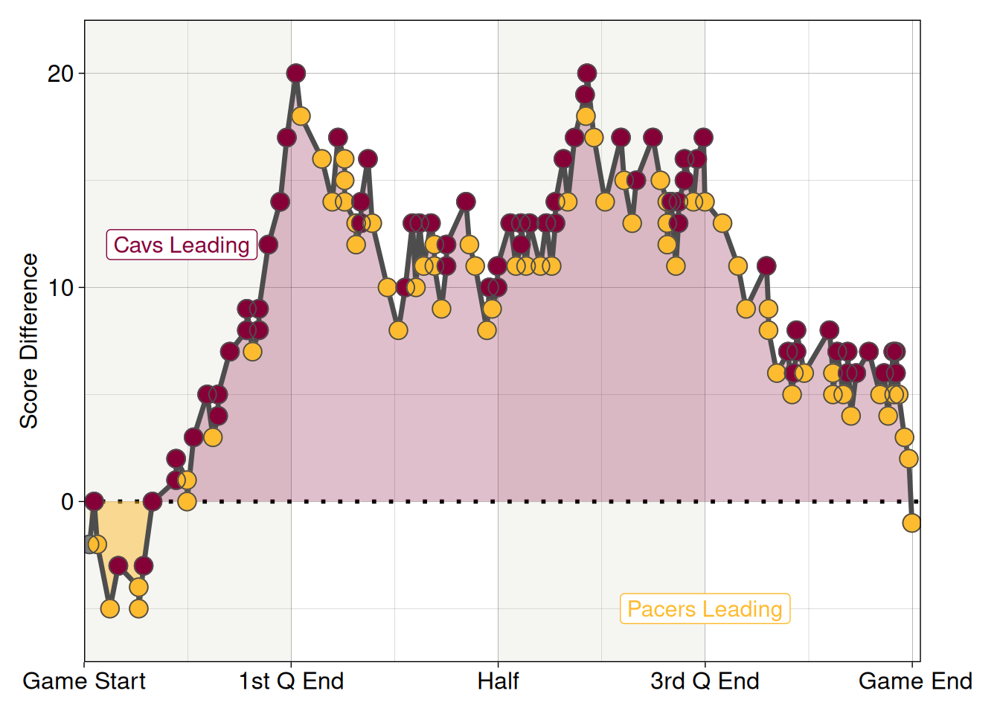
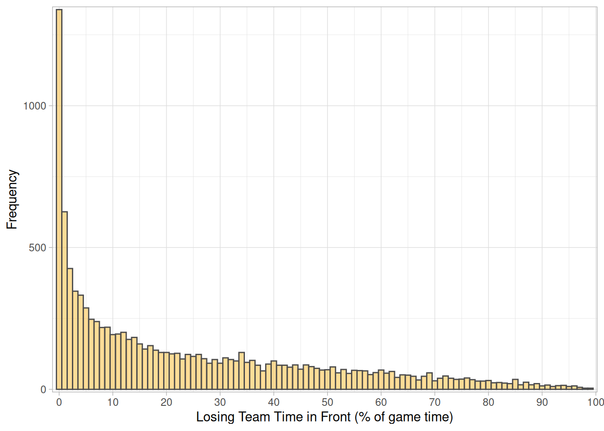
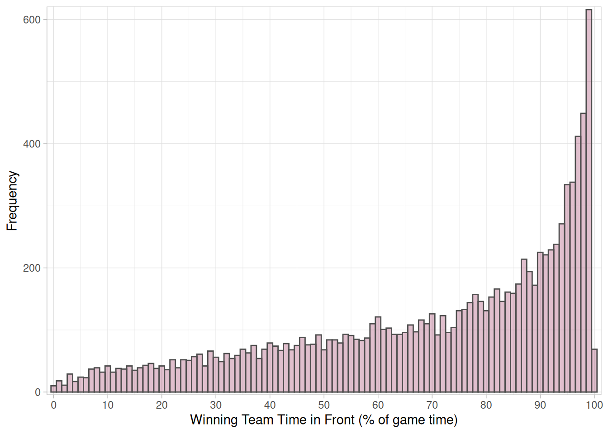
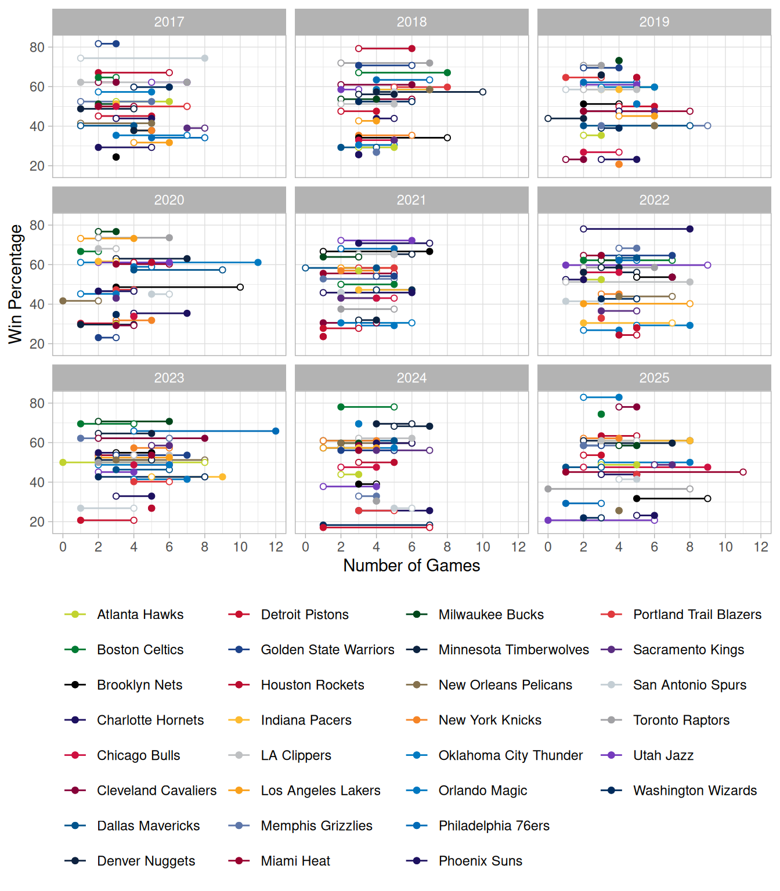
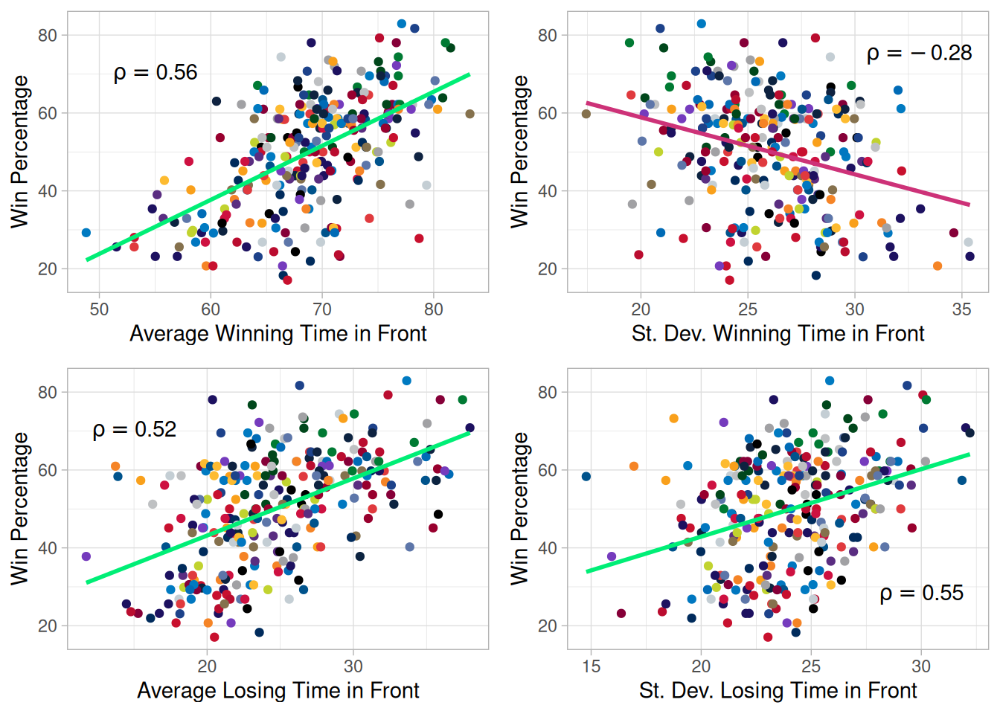
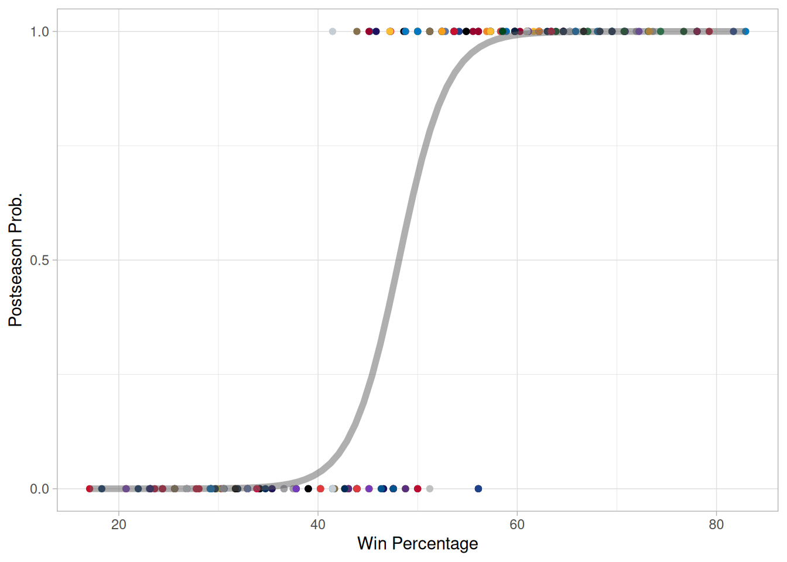
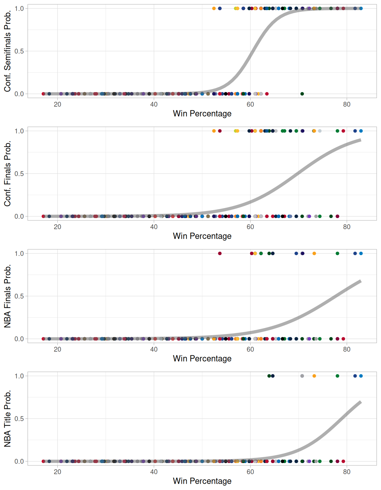
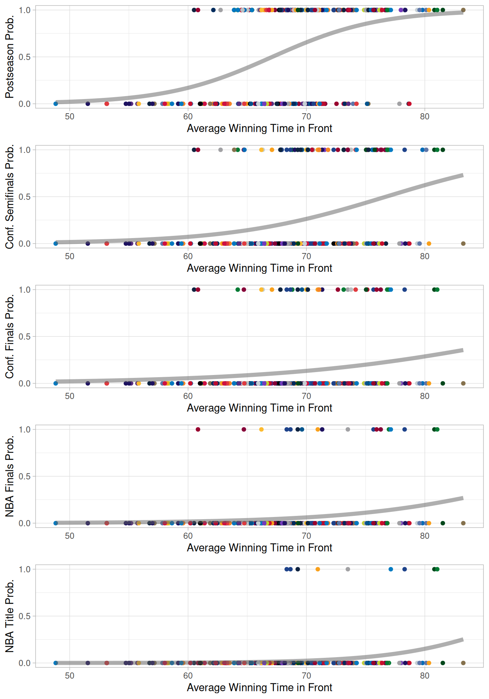

How Efficient is Basketball?
Basketball
NBA
Basketball has a lot of close games, but how often do good teams need to come from behind to win?
Frequent Scoring, Close Games
Basketball is one of the youngest widely played team sports in the world. Over its short history it has grown from its roots in the YMCA to global popularity, with even derivative forms being played as Olympic competition. There have been several developments that have reformed the game, such as the introduction of the shot clock, the three point line and liberalisation of the rules regarding dunking. A feature practically unique to basketball however is the common occurrence of high-scoring, but still close, games. In a game both teams often score more than 100 points each while the final winning margin will be less than 3 points, meaning that the outcome could have been reversed by one more scoring event. Between the 2016-17 and the 2024-25 season, both teams scored more than 100 in 65% of the 10,740 games played. 18% of these high-scoring games finished within 3 points. Last-gasp winners exist in many sports, but not many of these last-gasp winners are only the last of (on average) 116 equivalent events.
While similar scoring dynamics are present in games like tennis or badminton, in those sports the aim is to reach a certain point total, rather than scoring the most points within a given time period. Rugby matches can have the similar turnarounds, but the number of scoring events is much lower. Time-limited close games certainly lead to exciting contests.
This dynamic does suggest that the game is sometimes won by whichever team scores last. Given the rapid turnovers of possessions in a basketball game, could the outcome be a 50/50 coin toss? Obviously this is an oversimplification, as some teams can win games consistently, with the Golden State Warriors & the Boston Celtics both consistently producing high winning percentages in recent years. In close games, the final seconds of game time can often be extended by breaks in play such as timeouts and the efficient use of this ‘clock control’ is often cited as a key factor in successful teams.
If basketball can often be decided by which team scores last, does the `best’ team always win the championship? Are the most successful teams rewarded with spots in the playoffs? Given that the ultimate aim is to reach the playoffs and win the championship, in some ways the answer to the last two questions is always yes. En route to the NBA finals in the 2024-25 season, the Indiana Pacers won three games in the playoffs where they trailed going into the final minute. The eastern conference semifinal against the Cleveland Cavaliers was particularly notable; the Pacers trailed from midway through the first quarter before finally regaining the lead with one second left in the game. While many sports have such exciting last-gasp reversals, the high-scoring nature of basketball raises the question, how often do teams dominate scoring while losing games? This in turn brings up a larger question, is basketball ‘efficient’? Is there an inherent nature of the games and competition structure that rewards dominating games less than expected? To address these questions we will need both game and season data.
Dominating Games & Last Minute Winners
Each basketball game generates a wealth of data, much of which is publicly accessible in recent years. Play-by-play game logs can be insightful as these record all distinct actions in a game, such as fouls or scoring events. From these game logs we can reconstruct any derived statistics on a per-game basis. Below is the scoring differential of that eastern conference semifinal between Indiana and Cleveland.
We can see that Cleveland were ahead for the vast majority of the game, after a short period of Indiana leading at the start. The deciding part however came with only three seconds to go, when the Pacers’ point guard Haliburton launched a successful 3-pt shot turning a 117-119 loss into a 120-199 win. While the result is obviously decided by the score at the end of play, Indiana were only leading for 7% of the total game time, compared to 88% for Cleveland (the remaining ~5% the score was even) so were the Pacers really the ‘better’ team? 88% is a lot of the game to lead and still lose. Do successful teams avoid what happened to Cleveland? Do they regularly come from behind as Indiana did?
To look into these questions we will use the game logs from the 2016-17 to the 2024-25 seasons. This covers 11,534 games in total, including 10755 regular season games. We will focus on the regular season games to ensure all teams have a comparable number of games in the dataset. To see how out of the ordinary Cleveland’s loss was, we calculate the fraction each team spends ahead/behind in a game, classifying these by whether they win or lose. Below we see the distribution of how long teams which lose have spent leading games. There is obviously a large peak at 0 for very one-sided games, but we can see a long tail all the way up to nearly 100% - the longest a team has lead the game and lost in this period is Clippers vs Wizards from January 2022, where the Clippers first took the lead with less than two seconds remaining. We can now see that Cleveland’s failure to complete a dominant win was unusual - only 79 games of the 10,740 analysed (15 games were dropped due to incomplete data) had a team who had longer in the lead, but went on to lose. That’s 0.74%, meaning this game would be in the top 1% of dominant losses.

The time spent behind in a win is the mirror of this distribution, as expected. The reverse measure, the time spent leading in games won shows a similar distribution, although the peak at 99% is smaller - it’s harder to dominate games than lose them comprehensively. Time spent in a tie is not counted in either statistic, so 0% time in front in a loss could include long stretches of tied game.

Using these distributions of data from the 9 seasons analysed we could label certain games according to their position in the distribution. We have labelled losses from the top 10 percentile of losing time in front as “dominant defeats”, which indicates that the losing team spent at least 61.5% of the game leading, while we also label wins from the bottom 10 percentile of winning time in front (also 61.5%) as “unlikely wins”. The plots below show each teams unlikely winds and dominant defeats across the 9 seasons. Comparing these to win percentage, we can see that generally more successful teams do have more unlikely wins (filled circles) than dominant defeats (open circles), although it is far from a distinct trend and the overall number of these games is comparable between teams and seasons.

We have seen that the extreme cases of dominant defeats and unlikely wins aren’t strong indicators of a teams success, but how do the measures that defined these games work out over a season? Do the teams that led for the longest in games have the highest win percentage? We can examine the correlations to find out.

The average winning time (averaged per season for each team) in front has a positive correlation with win percentage as expected, given that winning teams will spend longer in front. The standard deviation of the winning time in front has negative correlation with the win percentage, meaning that winning teams more consistently dominate games. The losing time in front also has a positive (but weaker) correlation with the win percentage, as winning teams will still hold the lead in games they have lost. Interestingly, the standard deviation of the losing time in front has a positive correlation with the win percentage, which is caused by more successful teams having more losses where they lead for significant periods.
The measures we have considered so far are all continuous measures, but the outcomes that a team desires are all binary outcomes - you either win the championship or you don’t, make the postseason or don’t. We can compare how well the continuous variables predict binary outcomes using a technique called Binomial Regression.
Binomial Regression
Binomial Regression fits a logistic model (an S-shaped, sigmoidal curve) using the continuous explanatory variables to predict the binary response variable. This then yields a probability of the outcome for each value of the explanatory variable. We can see how this works using the win percentage to see how well this predicts the probability of a team making the postseason.

The points in this plot represent the final league win percentage of teams over the past 9 seasons, offset according to whether the team qualified for the postseason in that year. Points with a postseason prob at 1 made the postseason, while those at 0 missed out. Binomial Regression generates the grey curve which describes how we could predict a team’s postseason likelihood given its win percentage, based upon the previous seasons. The curve is fitted using two parameters; the ‘slope’ and the intercept. The intercept can be considered as the residual chance of making the playoffs when the team wins no games. In this case, the intercept is 2.4E-9, meaning a team winning no games has about a 1 in 400 million chance of making the postseason. The ‘slope’ is 1.5, which means that the odds ratio (given by p/(1-p)) of making the postseason increase by 1.5 for each percentage point increase in win percentage. We can also calculate that the tipping point at which making the postseason is more likely than not (i.e. 50% probability) is a 48% win percentage. A win percentage above 54% gives a 90% chance of making the postseason. We can also determine how unlikely the outliers we see in this data are - the highest win percentage not to make the postseason belongs to the ’18 Denver Nuggets with 56%. This would normally give a 96% chance of making the postseason, equal to 26 to 1 in favour! The ’22 Spurs made the postseason with a winning percentage of 41%, which would normally give them a 5% chance, or 19 to 1 against. Qualification for the postseason in basketball depends on a teams position within the division rather than win percentage only, and these statistics highlight how the divisional system can be a mixed bag.
Reaching the postseason is obviously not the only outcome teams strive for each year, the playoffs have multiple stages, so we should consider how well win percentage predicts these outcomes. We can also compare them to the new measure of game dominance that we have derived, the average winning/losing time in front.

As the teams progress further in the postseason, the model represented by the grey line is less confident in predicting success based upon the win percentage, which we can see as the logistic curve does not reach p=1 for the conference finals and beyond. A win percentage above 72% will give the team a 99% chance of making the conference semifinals, whereas a win percentage above 97% is required to give a similar level of confidence of a conference finals appearance. A win percentage above 77% is needed to give a ‘better than not’ (probability above 0.5) chance of making the NBA finals (above 78% is needed for the same level of confidence in an NBA title win). This has only been observed in six teams across the 9 years analysed, and three of those teams won the NBA title. Whereas each percentage point increase in win percentage increases a teams odds of making the postseason by 1.5, the odds of making the NBA finals only increase by 1.15. This means increasing the win percentage from 50% to 60% increases the odds of making the post season from 2 to 1 in favour to 133 to 1 in favour, but only shifts the odds of making the finals from 54 to 1 against to 12 to 1 against. At each stage we can use an ANOVA with a likelihood ratio test to determine if our model is appropriate for the data and significantly improves over the null hypotheses. All of the models used here meet this requirement.
We can replace win percentage with the average winning time in front to see how efficiently that works as a predictor of postseason success.

From the spread of data, we can see that the model will be less confident in predicting success based on the average winning time in front, as many teams who have been very dominant in their wins fail to make the postseason. This is also seen in the progression though the playoffs, with the models predicting much lower probabilities of success for the higher average winning time in front for the later stages. To have a 99% chance of making the postseason, the model suggests that a team should lead (on average) for 90% of the games in which it wins. This level of dominant wins has not been seen in the 9 years analysed here. To get over a 50% chance of making the conference semifinals, a team should lead on average for 76% of the games in which they win. All the models for later rounds of the playoffs require much higher, unachievable, levels of dominance in order for the model to suggest a greater than 50% chance. The losing time in front is a less accurate predictor of postseason success.
Dominating But Not Winning = Inefficient?
Modelling with binomial regression shows that the win percentage of a team is a good predictor of reaching the postseason and a reasonable predictor of success within the postseason. This is to be expected, given that winning games is how a team achieves success. Analysis of the winning time in front shows that while it is correlated with win percentage, it is less effective at predicting how well a team will fair in the postseason. This is perhaps counter-intuitive, as we may expect that successful teams dominate games, spending the overwhelming majority of games in the lead, particularly given how frequent scoring is in basketball. Together this disconnect suggests that basketball is a very even sport, where even very successful teams will not be able to control most games, but rather ensure they win games by leading when it matters, at the end of the game. This does raise the possibility that basketball is not an efficient sport, where the teams who triumph at the end of the season are not necessarily the most dominant teams, although this unpredictability is often what fans relish in a sport.
References
Graphs made with ggplot2 (Wickham et al. 2019) and gridExtra (Auguie 2017). Data retrieved and analysed using hoopR (Gilani 2023).
Auguie, Baptiste. 2017. gridExtra: Miscellaneous Functions for "Grid" Graphics. https://doi.org/10.32614/CRAN.package.gridExtra.
Gilani, Saiem. 2023. hoopR: Access Men’s Basketball Play by Play Data. https://CRAN.R-project.org/package=hoopR.
Wickham, Hadley, Mara Averick, Jennifer Bryan, Winston Chang, Lucy D’Agostino McGowan, Romain François, Garrett Grolemund, et al. 2019. “Welcome to the tidyverse.” Journal of Open Source Software 4 (43): 1686. https://doi.org/10.21105/joss.01686.